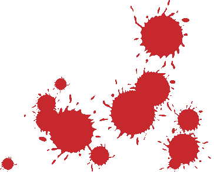

часть 1. Россия
Рассказы участников, записанные на диктофон (специально для мусоров: после расшифровки все записи уничтожены)
Братан, Москва
Месяц назад это было... Ехал в метро... Сижу, читаю книжку… Слышу, музыка играет на весь вагон... Решил пойти проверить, что это такое… Дохожу до того места… Сидит такой парень немаленький… с бумбоксом здоровым… на рынках такие продаются… играет музыка… то ли ой, то ли хард-кор… потом понял, короче, что «TNF» играет… Ну, думаю, не дело вообще… Надо что-то предпринять… Дожидаюсь, пока подъедем к станции… Я стою напротив… хватаюсь за перила за верхние… и бью его, короче, в ебальник с двух ног сразу… Парень после этого удара бьется еще и головой об железку сзади… и он вообще уже не при чем тут… Когда он отключается, я слышу шум сзади, поворачиваю голову… смотрю, еще один хрен вскакивает… такой же лысый… Ну, делать нечего… меня он так приладит, потому что он намного больше… я хватаю этот бумбокс и со всей дури тоже вписываю ему в голову… бумбокс разлетается на части… во все стороны детали… кровь всякая… люди в стороны шарахаются… парень падает на пол… тут вдруг вскакивают еще несколько человек… тоже бритых… рыла три, наверное… которые ехали по вагону немного дальше… и я их не заметил… начинают ко мне щемиться… двери были уже открыты… я понял, что мне ловить уже нечего… и вылетел из дверей… а парней там задержали люди, которые бросались в разные стороны… и выскочить они не успели…
Братан и Тонна, Москва
Тонна Было 20 апреля… По СМИ пошел слух, что будет пиздец… Все резко начали интересоваться скинхедами… Посещаемость редскин-сайта выросла в сто раз… А наци наоборот притихли… В тот день было выставлено 80 тыс. ментов на охрану Москвы…. Мы как раз решили собраться… Включили дикий шифр, потому что любая группа людей воспринималась ментами как объект для выполнения плана… Забили стрелку в «Макдональдсе», чтобы нас не палили… Как раз такое место, где не могут ну никак собираться скины… Человек пятнадцать нас было… А дальше такая тема, что никто не знал, куда пойти… где фашисты будут… В центре вообще был беспредел… Рядом четыре автобуса с омоновцами… У меня в голове сидело почему-то, что фашисты должны быть в Чертаново… Разбились на мобы и поехали… Доехали до Чертаново, там менты заволновались, что моб какой-то агрессивный собрался… Мы решили пойти вглубь района подальше от метро и ментов… Чтобы ментов не пугать, решили идти с двух сторон пруда…
Братан Мы пошли по левой… Нас было шестеро… Причем двое были совсем не трезвые… Реально только четыре человека могли что-то делать… Мы заметили троих бонхедов /Скинхеды-антифашисты называют наци-скинов бонхедами (от англ. bonehead - костяная голова). - Ред./… Думали, что еще найдем кучу народа… Решили на них сразу не прыгать… Там менты еще совсем рядом были... Так что решили подойти к ним… поговорить… и разобраться где-нибудь в ближайшей подворотне… В итоге из троих двое сразу отказались, что они фашисты, а один был вообще не в состоянии разговаривать… До этого он купался в местном пруду… и не смог ничего ответить… его пытались отмазать двое других… По ходу дела мы прикинули, что рядом находился глубокий колодец, куда можно скинуть пару человек… а об одного разбить бутылку… Причем разговор шел просто таки «на голых руках»… в одной руке бутылка… а рука с ножом в кармане... Но фашисты всячески пытались отмазаться… Мы решили, что еще найдем и не стали их трогать…
Тонна Дальше мы шли, наверное, километров десять… По спальным районам… Ни хуя нациков… А все стены свастиками изрисованы – значит факт, есть там наци, но они все от ментов попрятались… Встретили несколько футбольных хулиганов – решили их спровоцировать – показали им «Зиг Хайли»… Типа, если бы они ответили – им бы пиздец… Но они не ответили и убежали… А мы просто на толпу подростков натолкнулись… человек в пятнадцать… погнались за ними… Нагнали, спросили, фашики ли они, они ответили, что нет… Ну мы раздали им листовок антифашистских… Фашисты-то все попрятались…
Шерман, Москва
Короче, это был где-то октябрь… Скутер мне звонит и говорит, что его другу кто-то дал пизды на ска-концерте… Плеер отнял, рожу разбил… И на следующем концерте надо с ними разобраться… Скутер пытался собрать человек десять, в результате собралось человека четыре, и причем сам пострадавший не приехал… Все смотрелось достаточно тускло, но мы решили, что раз все равно приперлись… Это был концерт групп «Скальпель» и «Malefac-tors»... Начали как-то нажираться… пиво, водка, еще пиво… в баре, подъезде… потом еще где-то… Клуб в промзоне завода «Зил»… полный пиздец, сарай такой непонятный… реально самый хуевый клуб в Москве… Раздевалка, фойе, на втором этаже бар, где дискотека для гопников… Кругом гаражи, темно… Туда приходят людей обувать… К нам подходили… предлагали обувать вместе… говорят, типа, халява… мы отказались, они в результате каких-то подростков обули… А там в «Malefactors» один фашист играет… поэтому туда ходят другие фашисты… такое извращение… под карибские ритмы «Зиг Хайли» показывают… Короче, заплатили мы деньги за билет… стоим, а там человек 25-30 из 60 после каждой песни «Зиг Хайли» показывают… противно находиться было… Идея такая возникла… послушать пару песен… потом я становлюсь на шухере… кто-нибудь заходит в туалет… за ним Скутер, дает ему пизды и мы уходим… мы этот план выработали… тут к нам подваливает один тусовщик… он узнал нас… говорит, в зале находятся представители «ОБ88»… «Им кто-то стукнул, что вы красные, щас вам пиздец будет»… Мы решили дослушать последнюю песню и уйти… Скутер заходит в толпу сканкующих, начинается драка… Там такой большой человек, больше меня в два раза… он ему дает по роже с локтя… Скутер отлетает… их растаскивают... и мы уходим… Становимся и идем ко входу… Там все хотели, чтобы концерт не прикрыли, поэтому все тихо было… Тут у входа нас двое нагоняют… такие крупногабаритные… и один из них из «ОБ»… говорят: «Вы, типа, красные, щас дойдем до темного угла»… А Скутер стал спускать базар… «Не, не, все фигня»… потом раз… быстрое движение… фашисту на расстоянии одного сантиметра от лица засовывает «Удар» и нажимает на курок… Такая вспышка еще… красиво выглядело в полутьме… человек падает… и мы отписываемся…
Братан, Москва
Там была тема такая… Собирались два враждебных клуба второй лиги устроить драку между собой… Там в принципе отношения нормальные… не друг друга убивать, а просто подраться… Собралось человек 30-35… в этот момент откуда-то пошел слух, что рядом находится клуб третьей лиги и там много фашистов… И было решено не драться друг с другом, а завалить общих врагов… Заслали нескольких скаутов и нашли место, где они находятся… Все происходило в метро на платформе… Приехал весь моб в 35 рыл… их тоже было примерно столько же… и на них прыгнули… Они были завалены… Я увидел человека в майке «Blood&Honour»… сразу понесся на него… пару раз его окучил... потом кто-то еще подлетел… и помогли его завалить… Человек здоровый был… с него была сорвана майка и разодрана в клочья… причем люди рвали, которые вообще к политике никакого отношения не имели… Там были еще несколько человек в таких майках… их били, похватав заграждения, которые ставятся, чтобы толпу рассекать… а потом рвали эти майки… на куски…
Шерман, Москва
Мы бухали, гуляли, нормально было... Прошли пешком от Шаболовской до Университета… Короче, начали напиваться, а фашистов ни хуя не было… В общем, осталось нас человек пять… Тут Стрэйтэйджер сказал, что, типа, там на Фрунзенской есть скверик, где после Лужников собираются фанаты, бухают... Короче, поехали в этот скверик... Фанатов ни хуя нет, одни солдаты, менты… Совсем все уже разозлились… Стрэйтэйджер не пьет, он домой ушел... Мы то уж совсем бухие были… Осталось нас четверо, один причем англичанин, по-русски ни хуя не понимает... Мы решили тогда штаб НБП громить, как раз рядом с метро там... Купили пива «Клинского», хлеба черного, решили, что надо махаться… Вынесли там стекло бутылками полностью... Они оттуда повыскакивали… Ну, махаться хотели мы только с Подмосковным, а англичанин и Марксист махаться не хотели… Там подвал такой, а за углом отделение милиции... Так что мы побежали… Англичанина и Марксиста совсем нет, а мы с Подмосковным позади бежим... Как раз на углу дома, напротив отделения, Подмосковному надоело убегать... Он развернулся, задел мудаку в ебальник, его повалил… Я бегу дальше, вижу, что начинают приваливать другие нацболы… бегу дальше, думаю, беспредел драться во дворе отделения милиции… Вижу, за мной один бежит, орет: «Стой!», я разворачиваюсь, на него «Удар» направляю, он отступает… Отбежал метров пятьдесят, решил вернуться, посмотреть, что происходит… Вижу, никого нету, в штабе горит окно, люди копошатся… Иду тогда в сторону метро… Опять за мной какой-то крендель бежит… Я, короче, тоже бегу… Заебался бежать, разворачиваюсь, говорю: «Ты зачем за мной бежишь?»… Он: «А ты чего от меня убегаешь?»… Ну, я решил его напугать… и выстрелил из этого «Удара»… Между нами метров десять было, я не должен был попасть… Такая вспышка яркая, хлопок большой… и он сам напоролся… Короче, на него дул ветер, и он в облако это газовое ебальником вписался… Я через плечо посмотрел, вижу, он за ебальник держится… какие-то тетки орут: «Чего делаете»… темно… вечер… ни хуя не понятно… Я спрятался за ящиками… сидел в засаде… держал «Удар» с четырьмя патронами… думал, появятся эти гады, хотя бы парочку подстрелю… Но никто и не появился… так что я в метро пошел… а там на станции Марксист сидит…. Оказывается, он все время в кустах шифровался с бутылкой в руках… он этого чела видел, думал его по голове бутылкой описать… но раз я его подстрелил, он тоже в метро пошел… А про Подмосковного потом выяснилось, что его сильно отхуячили перед этой ментовкой, потом завели в подвал… Ментовка почему-то той ночью была закрыта, так что он попал не к ментам, как я сначала думал, а к лимоновцам… Он там видел, как пришел этот чувак, в которого я газом стрелял, жаловался, что ему глаза спалили… ему девки водичкой ебальник поливали… все дела… энбэпэшники совсем застремались… ни хуя не понимали… Подмосковный им по пьяни наплел, что он активист Антифашистского Молодежного Действия, и что это спланированная акция… Ну, его еще похуячили… Но ему повезло, там без окна холодно стало, дикий сквозняк, так что все решили оттуда съебаться… А еще они приняли его за фээсбешного провокатора… Решили, что со злости убьют его, а потом фээсбешники ворвутся и всю партию на хуй опишут… Короче, отобрали у него паспорт и отпустили… Потом через общих знакомых паспорт договорились отдать… почти… потому что потом у них кто-то штаб спалил… он на хуй сгорел… вместе с паспортом… и они на нас заяву написали…
Братан, Москва
Шел я по переходу с этим значком…с Трояном… символ такой там, шлем троянский… увидел двух людей…часов в двенадцать ночи… лет им, наверное, восемнадцать-девятнадцать… Такие ребята… будучи в небольшом подпитии… они пытались меня узнать… типа, не антифашист ли я… Я: «Да, да»… И тогда они решили на меня прыгнуть… и прыгнули… С одним еще удавалось перемахнуться… Поняв, что мне ничего не светит, я просто достал опасную бритву… и человеку порезал руки… Потекла кровь такая… Второй понял, что все бесполезно… щас его тоже порежут… У того порезанного челюсть отвисшая… глаза огромные… Он его быстренько утащил… Все происходило под телекамерами… Я потом где-то неделю ходил… стремался…
Шерман, Москва
Ехал я домой вечером… короче, в белом бомбере… синие джинсы подвернутые… В вагон заходят три кренделя… они как гопники выглядели… бухие… все в грязи… явно, их кто-то по платформе повалял… Они мне раз «Зиг хайль!» показывают… и рядом садятся… Я одному: «Чувак, ты не тому «Зиг хайль!» показываешь, я не фашист совсем»… Он на меня так смотрит… и говорит: «Бритый… бомбер… штаны подвернуты... и не фашист?!!… значит, еврей!»… Начал на меня прыгать… мы с ним не сильно махались… так… легкие удары в корпус… в ноги… У меня было два желания… либо ногой по яйцам вписать хорошо… либо «Удар» на нем попробовать… я его еще только купил тогда… Но двое других… они ж до меня еще с кем-то дрались… с кавказцами, может… и получили хорошо… И у них, наверное, было настроение домой поехать… одежду постирать… бухать спокойно… Так что они вдруг вышли спокойно…
Шерман, Беларусь
Как-то в Белоруссии концерт был реальный… флаги черно-красные… свастики зачеркнутые… и на концерт случайно попали человек десять наци… Короче, там гэбэшников было много… клуб нельзя было разносить… но была маза в конце концерта на них прыгнуть… Буквально за минуту моб в человек сорок собрался их валить… начали их оскорблять… типа, наци-пидорасы… «Щас вас порвем»… За наци начала охрана вписываться… типа: «Вы все здорово предлагаете… только давайте вы это на улице сделаете»… Короче, им просто дали убежать… одному только чуваку не дали… Хрюшой его звали… из моба местного «Торпедо»… у него шарф был с кельтами… Его человек пятнадцать окружили… оскорбляли… он даже нормально держался… ну, когда вокруг тебя человек пятнадцать… а рядом еще двадцать пять… Рядом вдруг нарисовался моб людей совсем больших… лет двадцать пять… трактористы типичные… под два метра… с такими кулаками огромными…Оказалось, что это Белорусский Национальный Фронт… фашики белорусские… они в этот вечер собирались валить РНЕ, то есть русских фашиков… и они чего-то хотели подписать анархистов и антифашистов минских вместе валить эрэнешников… Их на хуй послали… так что они сами пошли… а Хрюша стал оправдываться, что кельтский крест – это фанатский символ… ваще он никакой не нацист… так на концерт пришел… музыку послушать… Ну, его один чувак узнал… типа, видел с какими-то нацистами… он вышел с ним один на один… за угол завел… и дал ему пару раз по морде…
Тонна, Москва
Собрались мы послушать всякие, так сказать, оперативные донесения… У меня с собой был тяжелый рюкзак со всякими листовками и прочей печатной продукцией… килограмм пятнадцать, наверное… Сидим мы на ступеньках у Библиотеки им. Ленина, там у памятника Достоевского, видим вокруг нас какой-то моб начинает формироваться… непонятной направленности… Ну, мы потихоньку пошли к метро… оборачиваемся… а на нас толпа несется… Нас девять было… а их, наверное, рыл пятнадцать… Все начинают съебывать… я с этим рюкзаком… перепрыгнул через турникеты даже… неудачно, колено разбил… короче, бегу последний… Меня заклинило… все съебут… а я с этим рюкзаком… последний… значит, поймают… Ну, я рюкзак скинул прямо на станции… и в поезд забежал… а за мной такая большая бочка залетает… чувак крупнее меня… Мы сцепляемся… я думал, пиздец, щас мне наваляют… я же всю ночь не спал, еле на ногах держусь… а тут целая толпа… Слышу звук разбиваемого стекла… оказалось, что в вагоне я, еще трое наших и этот чувак… а вся толпа не успела ни хуя… Чувак-то тоже этого не заметил… тут-то ему об голову бутылку и разбили… осколки всюду полетели… один мне в лоб воткнулся… какой-то девушке вену порезало… все было в крови этой девушки… а чувака еще ногами окучили… Он там реветь стал… типа: «Не бейте меня»… встать пытался… ну, ему еще по ебальнику пару раз захуячили… Короче, подъехали к станции… чувак уже никакой… пассажиры охуевают и на нас по нарастающей бычат… Мы вырулили на платформу… сгруппировались… Тут я вспомнил про рюкзак с литературой, документами и записными книжками… не хотелось потом с ФСБ разбираться… Поехал на Библиотеку… рюкзака не вижу… спрашиваю патрульных солдат… Они берут меня под руки… и ведут в ментуру… неприятно… Там мой рюкзак на столе стоит… менты вокруг ходят… типа, принюхиваются… говорят, думали саперов вызывать… вдруг, типа, бомба… Спрашивают: «Чего за беготня сегодня на станции была?»… Я говорю: «Фиг знает – толпа побежала, и я тоже побежал»… Ну, они рюкзак отдали…
Зяблик, Москва
Первый момент был... Три человека… Одна девушка… Из Питера… Тоже ШАРП… Реально ШАРП… я вообще никогда не встречал девушку ШАРП… Ей когда было лет десять, ее пытались фашисты изнасиловать… она с того момента фашистов ненавидит… И еще один товарищ… из Тюмени… Он тоже ШАРП… И я… редскин поддерживаю… Все антифа… Зашли с друзьями, побухали… Стоим… Дашка одевается так… Я никогда не видел такую девушку-скин даже у нацистов… У нее бомберы, подтяжки, все… На левом плече у нее «анархия», на правом красная звезда… У всех шнурки красные… Подбегают три бычка… Один, может, пионер был… Он и начал кричать: «Коммунисты, типа… Красная тварь!»… Мне как обычно первому достается… Ногой по башке… я свалился, ничего не понимаю… Слышу какие-то тыки, тыки, тыки… Меня поднимает мой товарищ… за шкирку хватает... ты чего, мол, свалился… Они начали убегать за угол… Там магазин… супермаркет… Люди не реагируют… Мусоров нет… Я остался… у меня голова жутко болела… А Дашка… Дашка пиздится еще как… Пионер успел убежать… А быку одному бутылку об голову разбили… и он свалился… Второго ногами задолбили… прямо там… за сараем…
Второй момент был… Нас было человека четыре… Тоже Дашка была с нами… И мы шли по переходу станции «Добрынинская»… Видим, наци… Человек пять… Мы под шафе были, короче, обкуренные… по барабану, короче… Подбегаем сзади… я одного хватаю… просто… как бы дружески… ну еще лысый был тогда… Он говорит: «О, типа, свой, нац»… Двое там, может, были идейные, остальные пионеры… У него был «лонсдейл» и кепочка… ну, я схватил эту кепочку и, типа, начал его грузить… «Вот, ты знаешь, что это такое… с кем мы воевали… мы не с немецким народом воевали, а с фашизмом»… Увидел там у него кельтские кресты… Он начал говорить: «Отдай, отдай, отдай»… Те абсолютно стояли… они видят, что мы такие настроенные быки… и я ему по ебалу, короче, двинул… И понеслось… начали метелить… эти стоят… все орут: «Остановите!»… ну и нормально… Троих мы хорошо отметелили, одному бутылкой голову пробили… двое убежали… мы так спокойно ушли… типа, победители… а они убежали и все…
Еще один момент был… Тоже нас четверо было… Тогда были действительно все… кто обкурен, кто под шафе… Ехали спокойно, ничего не хотели… просто хотели спокойно доехать… Сильно при параде были тогда, то есть одевались, показывая себя… что вот наша культура ШАРП, РАШ и все такое… Я последнее время только так не хожу… после всех этих событий… вчетвером стоим, значит… в вагоне… мы с Дашкой вот у этих дверей сзади… и еще двое вот здесь вот… Заходят четверо… ну, быки реальные… то есть у них вот эти куртки «лонсдейл»… А я еще был помутневший такой… ничего не понимаю… И опять Дашка как обычно первая начинает орать: «Вы там предаете нашу культуру, вы там нацистские твари!»… Они там стоят… даже реально не понимают, кто мы такие… какая-то психованная баба орет… не унимается чего-то… и они пошли вперед… Я чувствую, мне кто-то бьет… ну, я ж помутневший такой… и падаю как обычно первым… Меня жутко пинают… чувствую, со мной рядом кто-то падает… это Дашка… ей об голову бутылку разбили… Наши чуть позже подскочили… и начали метелить… Потом мне рассказывали, что мы их все-таки загасили… Машинисты мусоров вызвали… наши выбегают… меня кто-то хватает за шиворот… я начал отбрыкиваться… думал, наци не наци… мне говорят: «Чего, дурак, что ли, это свои, типа»… и потащили меня по переходу… Мне сказали, что все нормально было… их хорошо отметелили…той же бутылкой, что Дашку… кого-то хорошо царапнули… вроде вообще по сонной артерии… мы, конечно, убегали, но не от наци, а от мусоров…
Ну и последний момент… негативно закончился… Иду как обычно… такой бравый человечек… в ботинках… лысый… отбеленные штаны… присел почитать газетку… там пацанов подождать надо было… Подходят двое таких… один был в белых шнурках… второй пионер был… пониже… первый начал: «Откуда, куда… чего сидишь тут… а чего в красных шнурках?»… Я говорю: «Я – ШАРП!»… Сразу последовал удар ногой по носу… я секунд на двадцать отрубился… звездочки в глазах… перекатился назад и лежу… только чувствую, что по ребрам жутко бьют…
Рева-Корова, Волгоград
Я не помню, в каком году это точно было… в это время «Манифест» очень успешно концертировал, а моя группа пришла в упадок… и когда я получил предложение от музыкантов «Манифеста» выступать вместе с ними в качестве фронтмена, я сделал плохой шаг и распустил оставшихся ребят, а сам ушел в «Манифест»… После пары месяцев репетиций нам предстоял концерт в Волжском... весь репертуар тогда я не освоил... и половину концерта пел Волк… предыдущий вокалист группы… а потом он представил меня… он сказал: «Теперь перед вами выступит тот, кого вы давно ждете – новый фронтмен группы Рева-Корова!»… Я вышел на сцену, спел первую песню… я очень волновался… и перед тем как запеть вторую песню сделал речитатив в духе Джима Моррисона… для самоутверждения я решил, что необходимо выбрать доминирующую прослойку в зале и наехать на них… доминирующей прослойкой не по количеству, но по силе были скинхеды,/Рассказчик - представитель волгоградского панк-движения и потому, говоря о наци, неточно называет их не бонами, а скинхедами. - Ред./ которых организаторы концерта пригласили для охраны этого мероприятия… я начал рассказывать тут же придуманную историю, которая звучала примерно так: «У меня есть знакомый негр… – реакции пока не было – … и этот негр недавно женился… на русской девушке»… Тут явное неодобрение прокатилось по рядам скинхедов… им это было понятно… негры ебут русских девушек – это плохо… Я спросил: «Знаете, откуда эта девушка? Эта девушка из Волжского!»… Все… Это было ужасно… Но явно эта лысая часть меня полюбила за то, что я поднимаю эту тему… тогда я сделал оверкиль… я сказал: «Таким образом этот негр дрочил на весь ваш фашизм и апартеид, вместе взятые»… Я допел песню и должна была начаться следующая… я знал, как она начинается… слышны были звуки одной гитары… она явно начиналась не так… я думал, что ребята тоже в моем духе решили сделать какой-то подъезд к песне… и решил еще поговорить… но микрофон оказался отключен… Я обернулся назад… уже к этому времени пропал и звук гитары… на сцене никого не было… это были трусливые ребята из группы «Манифест»… если б там был мой «Патронташ», все было бы иначе… а они просто ушли со сцены… но я подумал, что это техническая неполадка… я ждал реакции и хотел ее, но не думал, что она будет такой… я вышел за кулисы… «Что случилось?» – говорю… они отворачиваются… тогда я сам сообразил: «Ага»… надел пальто и спустился из-за кулис в зал… Тут подлетели скины… вначале их было человека три-четыре… потом больше… сперва они просто что-то говорили… я поднял руки… я хотел с ними говорить… не хотел драться… Один из них махнул ногой и попал по этим рукам… и я понял, что теперь они бьют меня… я пригнулся, как боксер, который защищается… закрыл глаза, виски и корпус… потом мне говорили, что видели нож… Подбежали местные панки… это были панки из той же генерации, что и я… Шизень, Юз… не помню был ли Винни или нет… они кинулись растаскивать… били их руками… но в то же время били и по сознательности… пытались убедить… кто-то из них сказал: «Вы что делаете?… Вас пригласили охранять… больше не будет этой работы»… Когда все рассосалось, я сел в машину к «Манифесту»… Подошли местные журналистки… музыканты рассказывали, чем занимаются… уже не было ни слова о новом фронтмене… а где-то через месяц я был уволен из группы… правда, успел записать с ними песню «Мужчина в танке», которая вошла в альбом «Месть»…
Скутер, Москва
Короче, как-то мы забились с Серегой на остановке… остановка рядом с магазом… Пришел я раньше… сижу один жду… короче, два бона пьяных доебываются к хачу… он взял… не долго думая, в первый попавшийся автобус прыгнул… и съебал… А я еще небритый такой сижу… пиздец, у меня щетина… слышу, один такой постарше… попьянее… говорит: «Вон еще один такой сидит»… а я слышу, типа… другой говорит: «Не, не, ты чего»… Короче, они сидят… тоже автобус ждут… короче, подваливает Серега… причем, не один, а еще с двумя парнями… Зашли в палатку… пива купили… я говорю: «Давайте пиздюлей дадим чувакам»… выходим, подваливаем… кто хач там… Серега говорит: «Я – хач!»… короче, слово за слово… мы их опиздюлили… с Серегой… остальные пиво держали… Одного я свалил… кровищи было… пиздец… а другой в стойку встал… вдвоем пришлось окучивать…
Пошли мы, короче, вчетвером на концерт… «Скальпель», «Malefactors»… Приходим, там ска рубят… знакомых там встречаем… Один знакомый – нац… давно с ним конфликтовали… на словах… до дела не доходило… а он такой парень… с моей знакомой там одной общается… И он подваливает… говорит, типа: «Блин, тебя пропалили… будут валить вас»… Я: «Пиздишь, что ль»… Короче, не придал значения… дальше слэмился... тут один слэмер мне в грудак локтем дж!… Я подхожу к ребятам… говорю: «Все надо дергать отсюда»… Пошли сгруппированно…тут у выхода подваливает… такая репа… за воротник меня хватает… «ШАРП, там»… Я, короче, «Удар» достаю… в ебало ему… и все… благополучно соскочили…
Пошли мы на «Spitfire»… там тоже подвалили к нам… начали выебываться… «Spitfire» говорят: «Мы играем черную музыку для белых людей»… эти завозмущались… начали свое «Зиг Хайль!» там… «Spitfire» говорят: «Щас песня про фашистов»… Эти начали на сцену щемиться… «Spitfire» со сцены стойками в них… в зале скачка произошла… и они свалили… Короче, мы уже выходим… несколько парней отделяются в сторону метро… а оттуда гон… кто-то по ебалу кому-то… кровища… все убегают оттуда…чел валяется… нац… еще живой он был… я думаю, блять, в пизду, быстрее отсюда нах… он потом помер… нормальный концертик, бля… Потом водкой отпаивались…
Подмосковный, Москва
Пересеклись мы с Братаном и Скутером, пошли по бульварчику прогулялись... Тут на нас идет такая картина... два клоуна мелких... такие совсем колхозники... один из них в супербалахоне «Young National Front»... Появилась тема их хлопнуть... идем за ними... думаем, ща они в Сокола... все как надо оформим... ну эти суки свернули к пилорынку, блять, к Зениту... идут, блять, в ус не дуют, блять... Ну чо, думаю, уходят, блять... ну и хуй с ними... но это чудовище Скутер за ними... подлетает: «Стойте, типа, пацаны»... и вся хуйня, блять... нежно обнял чела, блять... короче заломал, блять... ну и начинает втирать... «Ты, бля, фаш ебаный... хуй ты на себя напялил»... У них, конечно, измена... «А, бля... хуе мое... мы не фашисты, мы туристы!... мы, типа, в походы ходим»… Пиздец, блять... Ну, мы ему: «Сымай, блять»... Они там: «А, бля... нам ее подарили... бля... вся хуйня... меня дома убьют, порежут и ваще»... Ну, чо... сделали ему, блять, предложение, как это... безотказное, блять... от которого невозможно отказаться, блять... «Либо тебе дома, блять, пизды, либо щас мы»... Ну, чел благоразумно на счет «три» снял... ну, мы так отошли... и это дело, блять, первым делом отправилось в ближайшую помойку, блять...
Нехудой, Москва
Мы вот с этим персонажем представляем одну из фан-бригад одного московского клуба второй лиги... причем фан-бригада эта создана исключительно по принципу антифа... Ситуация была какая... выезд во Владимир... на игру с местным «Торпедо»... приехали большой толпой... За тот клуб, за который мы болеем, ходит и фашня... в достаточно больших количествах... но мы с ними все давно решили... и решили на таком уровне, что все разборки происходят за пределом стадионов... если у кого-то какие-то проблемы, то все это можно решить в драке где-нибудь за сектором... На трибунах так как мы представляем Москву, то приезжаем вместе, шизим вместе, махаемся вместе... Так как нам на самом деле вся эта ситуация порядком остоебенила... год, блять, они нас подъебывали, мы их подъебывали... все это было на таком смешном уровне... но в этот раз все вылилось достаточно серьезно... Идет где-то, наверное, минута пятнадцатая первого тайма... нам выделили сектор за воротами... сидим мы все вместе... сразу хочу сказать, что приехало порядка сорока человек... для второй лиги это очень большое количество... нормально все, бухали вместе перед матчем... местные менты нас очень сильно контролировали... потому что в прошлом году, когда мы приезжали... это был последний матч сезона... там были конкретные беспорядки на секторе... в масштабах второй лиги это было повторение того, что Спартак и ЦСКА устроили в Раменском несколько лет назад... то есть, блять, с метанием лавок, скамеек, блять... менты со сломанными носами... И менты были готовы к повторению всех этих событий... они пасли людей от вокзала... Ну и вот... началось с того, что часть этой нашей фашни, которые злостные хулиганы и фанаты... типа, блять, начали заряжать название нашей группировки... типа, блять: «Мудаки, сосать... Зиг Хайль, Зиг Хайль!»... Я даже понимал, что все это на уровне прикола... очередная серия глумления над нами... я был уверен, что кто-то из нас тоже зарядит шутку... Я, как один из лидеров нашей банды, подлетаю к лидеру их банды... разворачиваю к себе и говорю: «Ну, чо... сука, давай попробуй, еб ты, пидорас, мне, блять, в лицо это повторить... ну, давай, чо ты, блять... слабо, на хуй?»... Он только открывает рот... я даже не знаю, что он хотел сказать... у кого-то из наших не выдерживают нервы... человек подлетает и просто конкретно мочит этого мудака с ноги так, что этот пидорас, фашист летит метра на три... дальше все по нарастающей... то есть, блять, понесся такой махач, что мама не горюй, блять... В первую очередь, конечно, охуели менты... то есть они стояли, не понимая, что делать... они не ожидали такого... они были готовы, что будут прыгать на них... будут прыгать на местных жителей... будут прыгать на местных фанатов... разнесут к ебеням стадион... но когда вот, блять, приезжает банда целая из Москвы и начинает прямо в начале первого тайма махаться между собой так, что летят скамейки... люди... кровью все залито... весь стадион забил на хуй на футбол... все население встало... «хуя!... вообще, чо творится»... не говоря уж об этом владимирском фанатье, которые просто были в шоке... понесся махач... трещат ребра, носы, кровища... скамейки летят, доски, палки какие-то... пиздец... притом, что нас было очень немного... чисто антифа, кто был на этом матче, буквально несколько человек... этих же мудаков чисто фашни как минимум человек пятнадцать, семнадцать... Но самое смешное... в этой нашей группировке перед тем, как она стала чисто антифашистской... там состояло несколько людей, которые причисляли себя к наци... а когда банда оформилась как антифа, им предложили банду покинуть... маза в том, что люди эти всячески на нас наезжали, срали нас, хуе мое, но в этот раз, когда понеслась драка, они начали долбить фашню... фашня им кричала: «Вы чо, блять?... Мы же НС, еб ты!»... А они им: «Нам по хуй... Мы в этой банде состояли... и честь бригады дороже!»... В результате дали этим мудакам пизды... а на последнем матче некоторые персонажи из нашей бригады не успокоились и решили продолжить, блять, давать пиздюлей этой нашей фашне... видимо, для того, чтобы вообще их изгнать из фанатизма как такового... Меня там не было, но посмотрим, как там все будет по ходу пьесы... я думаю, что у парней нормальные перспективы... так что эта история получила достаточно большой резонанс... и я очень рад... Я больше десяти лет на выездах... но первый раз видел такую реакцию ментов... они были в шоке... так дать просраться ублюдкам, которые много о себе возомнили... и фашне и ментам... это в любом случае хорошая порция адреналина... и очень правильная идея... всем советую ходить на футбол... это охуительно...
Там постоянно в этом переходе… человек банкует майками… притом у него там помимо Агаты Кристи… блять, и прочих Наутилус Помпилусов, блять… и всевозможных русских рокеров присутствуют майки с White Power символикой и так далее… на самом деле сам он, наверное, не врубается… думает, наверное, что это группа такая White Power с альбомом 88… или наоборот… одна хуйня… Ну, и соответственно я ходил неделю, вторую, третью… все у него висят наряду с Алисой эти майки 88, блять… в конце концов это меня заебало… Я говорю ему: «Слышь… еб твою мать… попутал что ль пес мохнорылый, блять… я тебя щас тут урою к ебеням, блять, нах»… он, ва-ва-ва, блять… хуяк, как дал ему в ебосос пидорасу такому нах… ну и все, блять… на этом все и закончилось… Маза в том, что больше он этим делом не торговал… Я отношу себя к ШАРП движению… скинхеды против расовых предрассудков… но одеваюсь совершенно цивильно… по мне там не скажешь… татуировки прикинул и все заебись… человек изначально не особо догонял, в чем дело… за что ему дают просраться… но то что его не было… это показатель… Если честно признать, эта акция была даже не идеологическая… мне просто захотелось дать пизды… я люблю подраться… мне это нравится… это сродни тому, что некоторые люди тащатся там… сноуборды всякие… водные лыжи… кто-то с парашютом прыгает… а мне в кайф махаться… я считаю, что если мудак даже нож достал… так ваще пиздец… прикинь, адреналин… или ты его… или он тебя… и самое удобное, что под это можно подводить какую-то базу идеологическую… я ему дал пизды, блять!… мои убеждения помогли мне, сука, дать ему просраться!… а можно просто сказать… блять, а вот это было в кайф… я просто шел по улице… настроение хуевое… дал, блять, в щи ему… и пиздец… Важно то, что адреналин, положительные эмоции… и если ты ваще ведешь такой позитивный образ жизни… живешь ярко… сопротивляешься… то это идеальный способ проведения досуга… и я всем нормальным парням здоровым рекомендую именно так проводить свободное время…
Возвращаюсь то ли с концерта, то ли с попойки… одет по моде хулиганской… значок с Трояном… Spirit of 69… все дела… Мне навстречу… идет реально расфуфыренный бонхед… молодой… и с двумя бабами… такой, как будто олигарх… и на нем две телки повисли… причем у этого олигарха не было даже сигарет… и он такой: «Земляк, дай закурить, еб ты»… и я ему: «На, кури»… и он берет сигареты… видит значок… «Ты, – говорит, – ШАРП?»… Я: «Ну да», – говорю… У меня вообще принцип такой: если человек с бабой, валить его, мягко говоря, неприлично… Если я бы шел с бабой и меня начали валить… было бы, конечно, круто, если б я дал этим уродам просраться… но если тебе дают просраться… баба еще начнет кипеш орать… «Семья там, тебе яйца отобьют, детей не будет, кто будет работать, ты на больничном, семью кормить нечем… сижу, последний хуй без всего доедаю»… Я думаю, блять, ладно, хуй с ними с бабами… слово скажет, мудака урою… высокий, но видно, не боец… он такой, посмотрел на меня… «Ну, ладно, все, хуйня»… На следующий день опять выхожу из метро… играл какой-то из клубов вышки… не помню кто… но это по ходу пьесы не важно… и стоит вот эта же туса… и у них там один такой выебистый… и этот же хуй там же… А там как… такой ряд ларьков… и этот один из пидорасов… их лидеров… бегает и все покупает… а у меня из палева… вот этот значок на куртке… и на тенниске… Trojan Skins… прям два значка… как раньше у металлистов… косухи все ушитые… и я иду такой… этот вначале вообще не понял, в чем дело… то есть, он меня наверное принял за какого-то альтернативщика, или скейтбордиста… хуй знает… татуировку на шее пропалил… все дела… И я к нему подхожу… вижу, там вот этой хуй стоит, на которого я днем раньше наезжал… думаю, щас без баб точно, пусть меня отпиздят… но схвачу какую-нибудь урну… в чан переебу и все… прям подхожу и говорю: «Слышь… фашизм – хуйня»… Тот такой: «Да ладно»… Я: «В натуре те говорю»… разговор двух мудаков… Он: «Ну, ладно, ладно»… Я говорю: «Давай стрелку забьем»… Тот: «С кем стрелку-то?»… Я: «С ШАРПами»… Сука, блять… Он начал меня терзать… Кто такие, чего такое, почему… Вообще не в курсе был… Я говорю: «Скинхеды, блять, против, типа, расовых предрассудков»… Он: «Мы – скинхеды! Ты против скинхедов?»… Я говорю: «Еб твою мать! Дурак, блять!»… Начал ему как в школе объяснять… был 69-й год… все началось раньше… изначально не было фашистской пидерции… это было движение низов, рабочего класса, английской молодежи… скинхед прайд начал ему объяснять… гордость эту всю… это пиздец… как об стену горох… В результате те мудаки у метро ваще потеряли ко мне интерес… они решили, что этот маленький мудак просто встретил своего знакомого… я стою… руками размахиваю… что-то ему объясняю… короче, я понял, что без мазы, блять… завел его за угол, блять… треснул в ебосос... сказал, чтоб он больше так себя не вел… развернулся и ушел… Местные эти тусы… они достаточно сильны… спальные районы, все друг друга знают… а я там человек новый… я вырос в центре... у меня своя движуха… а там я живу у девушки… Я думал, блять, сука… пидорасы отловят, мудаки на следующий день… а я зато, блять, потом такую бригаду приведу… весь район на хуй к ебеням сравняют с землей… нет ни хуя подобного… Теперь зато когда они меня видят, ваще делают вид, что не замечают… Маза в том, что все наши акции… такое давание пиздюлей… когда ты встречаешь человека, заряжаешь ему в нос… говоришь, что он поступает плохо и уходишь… оно ваще перманентно… чуть ли не раза два в неделю происходит… напился, в ебало дал и все… Смех в том, что эта деятельность моя и еще одного человека, который недалеко живет… она привела к тому, что фашня по слухам закипешовала… на севере есть пиздец бригада антифа, которая ваще всех хуярит… Просто надо по возможности стараться делать такую хуйню…
Подмосковный, Москва
История про нашего друга… Едет он к себе домой в Перово… Как всегда под градусом… Разделяет все идеи… но к сожалению щас опутан женскими узами… И, типа, там едет негр с каким-то парнишкой… и к ним докапываются два быкаря-бонхеда… вся фигня… докапываются-докапываются и, типа, такая идет тема… зреет махач… Он, типа, встает под градусом… подходит… типа, что за проблема… ШАРП форевер… Начинается махач… и они втроем удалбливают этих мудаков… причем негр одного берет на себя… удалбливают и выкидывают просто эти тела на Шоссе Энтузиастов… и дальше удивленному негру идет рассказ про ШАРПов… такая тема…
Тоже еще тема… идет чел в метро, клеит наклейки РНЕ… такой ваще убогий… Подходит к нему этот наш друг… а он такой здоровый, толстый… «Чего это у тебя за хуйня… ваще охуел… давай сюда это дело… и все, короче… уйдешь без пиздюлей»… Чел отдает и убегает.. наклейки летят в первую же урну…
Нехудой, Москва
Нас было четыре рыла… потом по слухам приехала туса человек в пятьдесят… разнесла весь клуб на хуй… дала всем пизды… включая музыкантов, директора, охрану… все подожгла и съебалась с зарядами ШАРП, ШАРП… А на самом деле была ситуация, что четверо людей перепили… причем из них антифа был один я… двое ваще нацисты… ну и один тоже наш человек… двое из той фашни, что пришли с нами… они решили за нас вписаться… то есть поймали двух нацистов… предложили им выйти и дали им пизды около клуба… все… Как потом это мне рассказывали… «Ты слышал, бля, приехал такой моб… бля… всех поубивали… пятьдесят человек в Склифе лежат»…
Черный плащ, Москва
Начало учебного года в одном ВУЗе… Как обычно вначале люди ничего не делают, сидят, бухают… вот и мы сидим во дворике, бухаем… и скучно, и адреналина хочется… Вдруг видим, люди такие на моде… один, типа, рокабильный, а один на лонсдейле и рожа бритая… ботинки черные… джинсы голубые, светлые… Ну, думаю, типа, интересно… надо подойти выяснить… подхожу, спрашиваю… «Вы, типа, из моего ВУЗа?»... «Да, типа»… «А ты, типа, не фашист случайно?»… «Ну да, – говорит, – типа, фашист… а что?»… Говорю: «Сложно тебе будет, типа, учиться»… Он говорит: «У тебя ко мне есть какие-то претензии?»… «Ну да, – говорю, – есть претензии… пошли за дом, разберемся»… Он говорит: «Да, давай пошли, только через полчаса»… типа, щас надо в какой-то деканат или еще куда-то зайти… Я его отпустил, подхожу к людям, говорю, через полчаса разбор будет… Мне говорят: «Ты дурак, что его отпустил, щас он толпу сюда приведет, надо тоже толпу собирать»… Собрали, наверное, человек двадцать пять… в том числе подписали каких-то чеченцев безумных… они такие какие-то… скорее бандитского плана… они там по блату учатся… боксеры там… Они дико обрадовались перспективе того, что у нас фашист в ВУЗе учится… телеги, типа: «О, а я там, когда был маленький, в первую чеченскую войну взрослым против федералов помогал… патроны подносил… давно, типа, фашистам носы не ломал… ты его покажи, спровоцируй там, чтоб он сказал что-то против чеченцев… ваще все… мы тогда сами разберемся»… Я говорю: «Нет, все-таки так, типа, не хорошо… я с ним забивался… вы как саппорт постойте… а потом уже, когда я с ним решу вопрос… вы уже сами решайте»… Короче, проходит полчаса, действительно, чувак ведет толпу из института…. а он сделал как… он просто пошел по своему факультету и в том месте, где пил его факультет, сказал, типа, претензии к нашему факультету… и привел свой факультет туда против нас… человек пятнадцать… Мы с ним пошли за угол и четыре арбитра… начинается махач… ну, такой очень кислый… я давно ни на какой спарринг не ходил… очень позорно, что его не свалил… Очень смешно было… он такой плотненький, чуть пониже меня, но, наверное, чуть больше тебя… такой широкий… он еще был на мартенсах, а я на кроссовках… он один раз попытался атаковать, но получил в живот и больше не пытался… но он грамотно в стойке стоял, и мне было в падлу пробивать ему оборону… по яйцам только заработаешь… поэтому мы ходили по какому-то узкому пространству… и я все время пинки какие-то давал… а пробить так и не пробил в результате оборону… А дальше такой фактор, что за домом стоит толпа человек в сорок и парится, что никто не выходит… в общем, она вся перетекла к нам и начался стрем, что милицию позовут… и закрыли это дело… А щас этот фаш застреманный ходит… ходят слухи, что ему еще потом чеченцы пизды дали…
Несколько лет назад на концерте «Spitfire» погиб нацист… поэтому на сайте «Коловрата» висит статья, что «Spitfire» уроды, на них ходят антифашисты… «нацисты приезжайте на «Spitfire», валите антифашистов»… «Spitfire» играет один-два раза в год в Москве… так как у нас достаточно неорганизованная, но внушительная группа, то было достаточно принципиально пойти на концерт… у нас были наполеоновские планы… как мы все это сделаем… типа поставим рядом с клубом машину с арматурой… много приглашений было разослано… но, к сожалению, собралось всего человек десять с нашей стороны… Поехали к клубу... выяснилось, что там человек двадцать фашиков, довольно серьезных… но надо идти на концерт, раз приехали… Удалось послушать всего несколько песен… у многих людей наших лица хорошо известны, а один человек был на антифашистской символике… зал довольно маленький, все хорошо видно… Песне на шестой началась драка перед сценой… заваруха длилась недолго… сразу набежала охрана и вытащили зачинщиков драки… двух наших основных людей… была маза, что после концерта начнутся разборки… мы решили выйти… Нас было человек десять… мы еще нагруппировали человек пять по такому принципу… «Полгода назад пили?»… «Пили»… «Фашиков не любишь?»… «Нет»… «Вот тебе бутылка, становись туда»… Вышли, встали… набрали немеренное количество подручных средств… от газового до ножей больших, бутылок… встали, ждем конца концерта… люди выходят… Тут на нас идут человек двадцать пять-тридцать… охрана дико пересрала… забаррикадировала клуб, чтоб туда никто не залетел… Орут, что вызовут ОМОН… у одного охранника корочка эфэсбэшника… фашисты стоят… чего-то не решаются на нас идти… кричат: «Ну, давайте, вы сюда»… а мы кричим: «Нет, вы давайте»… Чтоб не волновать охрану, мы решили отойти от витрин… забрались там на пригорок рядом… и стоим на краю обрыва… Чуваки обегают клуб вокруг и бегут на нас… но почему-то вдруг останавливаются… Думаю, что они засрали, потому что мы стояли твердо и не собирались отступать.. на краю обрыва… причем обрыв был пологим… но издалека выглядел отвесным… мы стояли среди деревьев… было темно и тяжело было определить наше количество… все сливалось в одно… а они стояли на открытом месте… Они сгрудились вокруг помойки… подручных средств набрать… и решали, прыгать или нет… ведь все равно мы отступить не сможем и еще их с этого обрыва туда выкинем… и тогда они разошлись… Потом это получило для нас достаточно выгодное развитие в интернете… у них была страничка… и они там на гостевой устроили разборку друг с другом на тему, почему так обосрались… «Это ты виноват»… «Нет, ты»… в результате они так переругались, что страничку закрыли на время…
Стрэйтэйджер, Москва
Такой был курьезный недавно случай… мы с людьми составом рыл в пять ехали на квартиру к одному человеку с целью попить пива… дело происходило на станции метро «Менделеевская»… Мы с кольца перешли на серую ветку… подходит поезд… из него выходят двое кавказцев, а за ними выбегают трое бонов и начинают этих кавказцев пиздить… Ну, мы недолго думая, прыгаем на фашистских ублюдков… естественно, их разбиваем на хер… оставляем лежать… при этом кавказцы поднимают жуткий крик, но в конце концов убегают… наверное, они ваще ничего не поняли и решили, что попали в какую-то хулиганскую разборку, в которой их случайно помяли… Мы стали грузиться в вагон, но вдруг обнаружили, что на станции группируются люди рыл в двенадцать-четырнадцать, половина из которых вполне приличные ряхи… они этого всего не видели из-за того, что мы вальнули ту фашню за лестницами переходов… Они смотрят на нас… а прикинуты мы были на хулиганской моде… они нам салютуют «Зиг Хайль!»… а мы им показываем «Фак офф»… Они ничего не понимают, но тут видят наши с парнем красные ботинки… орут: «ШАРПы!!!»… тут двери закрываются… они подбегают к дверям и начинают по ним молотить… может, кто-то в каком-то вагоне застрял, но двери вдруг снова приоткрываются… двое из них двери держат, и один из этих кабанов прорывается к нам в вагон… мы его пропускаем сквозь себя… он куда-то там падает… там было очень много народу… но народ вокруг нас как-то сразу расступился… тем козлам, которые двери держат, мы по рукам пару раз ногами заехали хорошенько… двери закрылись… и этот козел бедный… мне даже его жалко стало… такая здоровая ряха… он остался один… ШАРПы, видимо, были для него чем-то абсолютно мифологическим, и он боялся, что они пускают молнии из глаз или что-то вроде этого… он стал обращаться к окружающим с возгласами, типа: «Люди добрые, помогите, убивают!»… Люди добрые не понимали абсолютно ничего… бритые лупят бритых… они предпочли в это дело не вмешиваться… Этот бритый был очень хорошо завален и на следующей станции выкинут в толпу… хотя мы особо не усердствовали, все же понимали, у парня такой шок… Надеюсь, что дальше он не будет заниматься своими пагубными фашистскими делишками… если не попал в психушку, конечно…
Потом еще из последнего времени… мои траблы начались после того, как я на свое горе купил красные ботинки… на меня прыгнули раза три… один раз просто попинали, а один раз я ехал с ребятами, которые имеют мало отношения ко всяким таким бритым антифашистским делам… они просто хулиганье… И, значит, ехали мы между станциями метро «Тульская» и «Нагатинская»… заходят люди такие на моде, на дорогой джинсе… садятся и начинают пялиться… ну, думаем, бывает такое, разговариваем дальше… и люди эти на нас прыгают… там были такие приличные ребята, но все равно пиздюлей получили… но при этом вышла неприятная история… Как-то на «Парке Культуры» при попытке бонов завалить кавказцев какая-то активная бабушка нажала на кнопку и связалась с машинистом, так что на станции у каждой двери их встречали полисы… поэтому щас они сделали очень грамотно… Они своего одного человека поставили рядом с кнопкой… а один мужичок, который, видно, счел себя самым доблестным хранителем правопорядка в общественном транспорте, попытался прорваться в сопровождении какой-то бабульки… так тот человек, что стоял на кнопке, он их всех… короче, мужику хорошо досталось, но потом мы завалили и этого человека… и просто на «Нагатинской» загрузились в другой поезд и уехали… Мужичок тот, с одной стороны, был прав, конечно, но из-за него мы могли огрести хороших все люлей…
Одно время я сам в течение недель двух тусовался со всякой фашистской пионерией… пиво пил… а потом все… понял, что это лажа совершенная…
Так среди них уже всякие легенды ходят… Один из них… мой сосед… мне рассказал такую историю… У них обыкновение зимой тусоваться недалеко от парка Горького и валить всяких доскеров, людей на широких штанах… в общем всех подряд… И вот, значит, на станции метро «Баррикадная» поднимались они по эскалатору… составом рыл в тридцать… и якобы, я не знаю… человек пять тоже бритых на конкретном прикиде подходили к эскалатору, чтобы спускаться вниз… Они им салютуют, орут «Зиг Хайль!» и все такое… и эти пять людей… они были такие здоровые, как он описывал… они себя повели очень странно… они перепрыгнули через заграждение, которое отделяет один эскалатор от другого… на выход и на вход… дождались первых людей из этой толпы и стали валить их всех ногами… У одного, как он мне описывал, была нашивка с серпом и молотом… у двоих-троих красные ботинки… то есть их просто стали пиздить такие мужички лет по двадцать пять-двадцать семь… и завалили…
Федор /см. пред. сноску - Ред./, Волгоград
К примеру, погром штаб-квартиры РНЕ в Волгограде… Акция всячески разрекламированная… с видеосъемками… она меня дико раздражает в том плане, что по большому счету это была подстава… просто самореклама группы товарищей… Как это получилась… должен был быть фестивальчик панковский в городе Фролово… все туда собирались поехать… администрация проводить этот концерт запретила… а организаторы никого не предупредили… С утра ребята подъехали на вокзал… в ожидании поезда хорошенько поддали… когда собралось наибольшее количество публики… и публика дошла до соответствующей кондиции… вышел человек и объявил… так, мол, и так, концерт во Фролово отменяется из-за стычки со скинами… Скины изначально не имели к прекращению концерта ни малейшего отношения… это были чисто дела администрации… короче, был брошен клич: «Да, давайте отомстим гнусным фашистам!»… Обломавшиеся пьяные пацаны естественно с радостью ломанулись… а рядом была та самая штаб-квартира РНЕ… Был выходной… никого особо там не было… штаб-квартира выглядела достаточно убого… располагалась она в обувной мастерской… где сидел один чувачок… чувачка взашей вышвырнули… перегромили все в этой мастерской… дали слегонца обувщику… чтобы не сотрудничал с кем попало… организаторы камеру подсуетились подогнать… В результате получается, что кто-то зарабатывает себе репутацию борца с фашизмом… хотя возможно, что это действительно изрядно попортило настроение эрэнешникам… они и так были какие-то забитые и жалкие… а после этого самораспустились…
Из более приличных акций… собирался в городе комитет по делам молодежи… решили устроить в городе металлерский фестиваль и пригласили этих старых металлеров… «Коррозию металла»… такая малосимпатичная команда… На разогреве у нее играли «Коловрат» и еще какие-то откровенно фашистские команды… это должно было быть во Дворце Спорта… вполне солидный концерт… Тут сработали информативно… во-первых, позвонили в Союз ветеранов… это было, конечно, смешно… в две тыщи каком-то году несчастные оставшиеся ветераны неожиданно узнали, что фашисты в городе… они были шокированы до мозга костей… оказалось, что есть какие-то скины… какие-то неонацисты… забегали они страшно… забили во все колокола… надолго их, конечно, не хватило, но шумиху в администрации они подняли… Плюс сообщили в еврейское национальное общество «Сохнут»… В общем, под давлением этих организаций администрация проведение этого концерта запретила… так что поиграть скинам в Волгограде мы не дали…
Мелкие стычки происходят постоянно… особенно в Волжском… город небольшой… фактически сросся с Волгоградом… все друг друга знают… Как-то был панковский фестивальчик в одном ДК… я туда съездил посмотреть… такая огороженная советская площадочка танцевальная… высокий забор… половина, как всегда, прошла без билетов… довольно большая собралась толпа… толкались у входа человек пять скинов… Один пацан уже обдолбанный, пьяный… из панков… Малыш, что ли, его кличка… уже с разбитой мордой… ходил и снаружи, и внутри… «Скины!… Давайте бить скинов!»… Скины тем временем тоже вяло так препирались… никто особо на них не обращал внимания… ну, а когда Малыш полез орать непосредственно у них под носом, то тут же получил по морде… за него сразу кто-то заступился… и пошла стенка на стенку… честно говоря, довольно абсурдная… скинов всего человек пять… панков человек сто… со стороны панков участвовали в основном те, кому по морде пришлось… Я в какой-то момент выходил с девушкой пива купить… девушка получила по морде… причем случайно… просто в неразберихе ее панки толкнули на летящий вперед кулак… такая шальная пуля… Мы пролезли сквозь эту драку и купили пива… они там рожи друг другу расквасили и опять разошлись… никуда далеко скины не ушли… ходили там же… задирались… как мне рассказали, когда я уже уехал, кто-то из скинов наехал на молодого хачика из панковской тусовки… а он такой был примажоренный… звякнул по мобиле… и приехал просто боевой отряд грузинской мафии… и под улюлюканье панков эту несчастную пятерку скинов гоняли по всему парку… С другой стороны в том же самом зале, где звучали панковские и антифашистские песни, несколько человек бритоголовых плясали у сцены… противостояние было чисто на уровне матерщины… кулаками друг другу грозили, но даже мордобоя не было…
Тусовка настолько срослась… нету никакого фашистского фронта, антифашистского… такое борение внутри себя… постоянно кто-то говорит: «Мы там с таким-то, таким-то»… «Так ведь он же скинхед»… «Ааааа… мы его убедили… он все теперь… из скинов ушел… он панк»… или наоборот… одна тусовка поддерживает другую... если бы других не было, нечем было б заниматься… Еще очень сильно заметно стало скинов в день рождения Гитлера… но те скины, что бузили на дэрэ Гитлера… это были самые обычные гопники… они даже о скиновстве ничего не знали… средства массовой информации сделали такую рекламу скиновскому движению, что несколько дней вокруг дня рождения вся гопость ходила и кричала: «Хайль Гитлер!», пытаясь набить кому-нибудь рожу… чтобы почувствовать себя бандой… ну, а потом снова стала самой обычной гопостью…
С другой стороны… хотя это и игры такие детские… учитывая безбашенность обеих сторон, периодически кого-нибудь прибивают… когда пьяный домой возвращаешься, нарываешься на толпу своих знакомых… потом начинается вендетта… Шел какой-нибудь несчастный панк… пьяный… домой… нарвался на скинов… поцапался… хорошенько получил по морде… на следующий день все это становится известно… собирается толпа человек десять панков… ходят и гоняют скинов… скины вообще трусоватые… когда идет мало-мальски приличная группа людей, они стараются в конфликт не вступать... иногда кого-нибудь в подобных потасовках прибьют… один-два случая в год бывают… как-то одного скина панки зарезали…
Ходят слухи, что… есть, короче, овраг реки Пионерка… она загнана в трубу… большой и грязный безлюдный овраг в самом центре города… там была когда-то детская железная дорога… щас она не функционирует… одно время администрация там пыталась сделать центр досуга… построили большое здание вокзала… и так и забросили стройку… там несколько этажей в здании… большие подвалы… по слухам, там тренируются скины… хотя у меня реальных подтверждений этому нет… хотя был случай, когда два цыгана кочевых остановились сдуру в этом самом овраге… и были убиты… видимо, действительно, скинами…
Фарид и Стас/см. пред. сноску - Ред./, Волгоград
Был у нас сейшен один… и скины пришли… на наш концерт… а у нас была песня «Нацистские свиньи»… и мы ее пели… а еще я одну фишку позаимствовал у Биаффры… он вот сюда большой палец… и вот так вот «Хайль Гитлер!» показывал… Ну, я повернулся к ним лицом… они попыхтели и ничего так… а потом мы с концерта выходим… идем... они толпой стоят… а я ремень такой в штанах таскал… патронташ… ну, я сразу его вытащил… у гитариста ваще разводной ключ… в сумке для гитары… в общем, так зарядились конкретно… Мы так толпой вышли… вроде нас пропускают… пропускают… и вдруг Бабая так раз… а он как-то сзади шел… реальный казахский панк… короче, они его прям хватают… и решили задолбить его просто… Ну, как-то они не вовремя решили это сделать… пошла драка… мы все там подписались… их много было… человек пятьдесят… нас человек двадцать… и они убежали…
Потом еще Леха все ходил и узнавал… что за чувак был в синей рубашке… «А чо такое?»… «Да я его ебнул, блять, по затылку ключом»… «А… да скин»… «Скин… все нормально тогда»… потому что из наших вроде никто не жаловался…
Был случай, когда в Пентагоне… это Дворец офицеров, короче… там у нас музыкальная толпа каждое воскресенье происходит… и туда тоже скины приезжать стали… один раз мой друг их напряг… опустил их немного… а на следующей неделе он не приехал… приехал я… и они приезжают большой конторой прям… и подходят прям ко мне почему-то… А он им еще кричал: «Давайте приезжайте… отыщете толпу… познакомимся»… И они мне: «Ну, чего… хотите познакомиться?»… А я вроде так отношения не имел к тому случаю… но чего делать… «Да, – говорю, – хотел»… «Ну, – они кричат, – пойдем, поговорим»… Пошли… я и от них человека три… один такой в форме эрэнешной… потом смотрю… вся толпа скинов подтягивается… и потом уже наши пацаны… мои друзья тоже подошли… ну, скины не ожидали, что силы будут равные… и Цирюльник их говорит: «Пойдемте, пацаны, на Мамайку бухать…»
Самая кайфная фишка была разгром РНЕ… они, короче, прямо вломились в РНЕ… закутали себе бошки… как маски самодельные… отпиздили охранника… одного или двух… погромили там все… чисто антифашистская акция была… таких прецедентов еще не было… До этого как… ну, пикетировали мы редакцию газеты «Колокол»… просто приходили туда…
Была еще акция… мы сделали гроб из бумаги… на нем вошь… написали что-то, типа: «Фашистская гнида к ногтю»… и прошлись по центральной улице Волгограда…
А был прикол… короче, идем с другом… и скины идут… одна дорога… мы по верху… они по низу… идут такие угрюмые… пиздюки… а впереди предводитель скачет… а кореш мой Мишутка знаком с ним… по Квадрату…в такой бундесовской майке… у нас в сэконд-хенде купил… это у нас только продают… а для того, чтобы там их не продавали, на них печати такие ставят «брак»… они пытаются их прикрыть… курткой там… И вот идет такой бундестаговец… орел, все там, стильно… а тут печать, типа, «брак»… и Мишутка такой… начал прикалываться… по-обезьяньи прыгает… ну, отвернулся… и идет дальше… а пиздюки: «Ты чо?!!! Ты чо это?»… и за нами… А тут Панч… и еще пацаны с Волжского… короче, напрягли их… вдвоем или втроем… посрывали с них аксессуары… значки… потом они, правда, отомстили… приехали, а никого не было… ни меня, ни с Волжского… только несколько человек… ну, они их отпиздили, одному бошку проломили…
Харрингтон, Москва
Хотели мы устроить небольшое пати… собрались в одной квартире… в подмосковном городе… бухали-бухали… Тут завалилась еще какая-то компания… то ли металлисты… то ли гопники… с бабами… может, искали место, где уединиться… а тут все бухают… вот они и пришли… Один из них подходит… спрашивает: «Вы ШАРПы?… я, типа, ваших идей не понимаю»… Один из наших говорит: «Пойдем, я тебе объясню нашу идею»… Они ушли… тут слышим с лестничной клетке крики… побежали туда… видим, там наш прыгнул на этого чувака… Наш говорит: «Этот, типа, бывший бонхед… он им и остался»… Мы начали дискуссию… Я его спрашиваю: «Ты фашист?»… Он: «Нет, нет»… Наш говорит: «Ты признай, что ты хуйло, тогда мы тебя бить не будем»… Он: «Нет, я не хуйло»… Я: «А кто ты тогда?»… Он: «Я – патриот!»… Я: «А ты какой патриот – который свою страну любит, или который не любит другие национальности?»… Он: «Ну, я не люблю те национальности, которые приезжают сюда, чтобы»… Он только до этого успел договорить… Дальше его свалили… В полдвенадцатого ночи крик поднялся на всю лестничную клетку… Соседи высунулись… Начали кричать, что милицию вызовут… Пришлось все это дело свернуть… А город маленький, никакой ночной жизни нет… зима… Я после этого свалил… А люди еще бухали… Тот наш допился до белой горячки… схватился за нож… начал орать, что порежет фашиста… наши нож стали отнимать… он его отдал только на том условии, что сейчас все вместе прыгнут на ту компанию… взяли, прыгнули… впятером выгнали человек десять-пятнадцать… пиздили их на лестнице, потом на выходе у подъезда… Вернулись бухать… смотрят в окно… а те еще трутся у подъезда… тогда похватали ножки от табуреток… выбежали, дали им еще пизды… Всю ночь гоняли их… по всему городу были слышны крики: «Фашист… не фашист»…
Еще история… завершился футбольный сезон… человек пятнадцать поехали за один клуб второй лиги… видят, на станции стоят человек тридцать бонхедов непонятных… два моба друг на друга смотрят… Тут подъезжает поезд… а там какие-то кавказцы… Бонхеды доебались до кавказцев… Тут наши влетают в вагон и начинают пиздить бонхедов… В вагоне был милиционер… ему тоже кто-то вломил пизды… Наши спокойно выписались и свалили…
Еще… это уже конец зимы… В Крылацком всякие сноубордисты катаются с горок… там концерты для них проводятся… фаст-фуд стоит… там лазают бонхеды… нападают на сноубордистов… Мы решили туда поехать и бонхедов разогнать… Нас собралось человек сорок… получилась толпа, а не моб… много народу, никто никого не знает… Собрались в одном баре… транспортировка продолжалась часа два… разведка сработала достаточно тупо… нас повела через холмы… вверх-вниз… у меня ботинки скользкие… температура около нуля… всё тает… земля скользкая… я на этих ебаных холмах как сам себе ебаный сноуборд просто… я думал, что с этих холмов уже живым не выйду… и вывела нас разведка в то место, где больше всего ментов… а народ про это не знал… Увидели бонхедов… зарядили… погнали… те дико испугались… побежали… Первый ряд наших начал пиздить бонхедов… остальные отстали… бонхедов случайно вогнали в толпу ментов и охранников… какому-то охраннику досталось по роже… несколько наших забрали в ментовку… наши начали отходить… Бонхеды шли за одной нашей группой, но не решались прыгнуть… наши вошли в автобус… там тоже ехали бонхеды… их выкинули из автобуса… За автобусом увязалась патрульная машина… на остановке зашли менты с автоматами… забрали одного из наших… лысого… его приняли за фашиста… В ментовке оказались несколько наших и фашиков… Менты стали пугать, что заведут уголовное дело за хулиганство… а наши и фашики сговорились и стали говорить: «Мы здесь случайно… ничего не знаем… все побежали и мы побежали»… Ментам это надоело… они сняли денег и всех выпустили…У ментовки собрались боны, которые ждали своих… наши-то перепутали и поехали в другую ментовку… Тут выходят задержанные… наших боны хотели отпиздить… но те, кто вышел с ними, начали их защищать… типа: «Мы вместе от уголовки отмазались»… так что наши спокойно домой уехали…
В вестибюле одной станции метро давно собираются фашики… Это у них место сбора, чтобы потом ехать в Лумумбу и чернокожих пиздить… мы туда давно уже хотели приехать… Послали туда скаута… Он посмотрел… говорит, их человек пятнадцать… А нас человек семнадцать было… Мы туда приехали… а их осталось всего человек шесть… Но раз приехали, то все равно прыгнули… Сделали достаточно грамотно… пошли по переходу… подошли вплотную и напали… из шести трое сразу убежали… остальным досталось за всех… Одному бутылку прямо в рожу забросили… Как ебаный баскетбольный мяч прямо в ебаное баскетбольное кольцо… Другого повалили и начали ногами в рожу тыкать… Третий пытался убежать вверх по лестнице… Но один наш стоял на этой лестнице… Выше него… И отправил его в нокаут ударом с ноги по хлебальнику… Мы начали орать: «Антифа!»… Там были какие-то кавказцы… они сначала дико испугались… а потом поняли, что не их приехали бить… и развеселились…